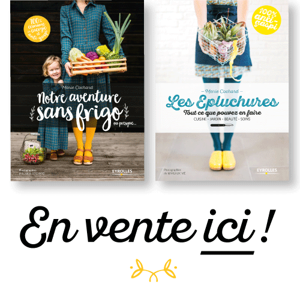
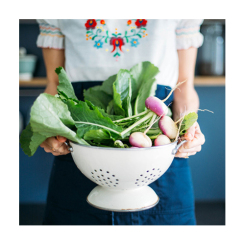

LIRE ENTRE LES VIGNES..
mars 16, 2018
Laisser un commentaire
Le sauternes de La Clotte-Cazalis, à Barsac, est sincère, frais, vivant à l’image de celle qui le façonne amoureusement. Chez Marie-Pierre, pas de mécanique, pas de maquillage, pas d’artifice. On travaille à l’ancienne, en fonction des constellations,
des cycles lunaires, avec le soutien des plantes et de Taropa, le cheval de trait.
Lire la suite →
PETITE CUISINE POUR AVOIR BONNE MINE..
février 13, 2018
4 commentaires
Il fait gris dehors et votre teint commence à prendre les couleurs du ciel ? Voici des petites
recettes pour retrouver une peau de pêche en deux coups de cuillères à pot, et devinez quoi ?
Les ingrédients pour réaliser la crème de la crème se trouvent juste là, dans vos placards de
cuisine.
Lire la suite →
CIEL J'AI MES LUNES..
février 5, 2018
9 commentaires
Une fois n’est pas coutume, j’évoquerais au fil de ce nouveau billet nos lunes, nos coquelicots,
nos isabelles, nos fleurs, nos bénéfices, nos ourses, nos culottes françaises… Si le sujet est resté
longtemps tabou, forcé de constater que les fabuleux écrits de Miranda Gray (dont le fameux
Lune rouge), suivi de près du mouvement « zéro déchet » ont fait évolué les mentalités…
Accueillez donc avec honneur et légèreté votre féminin sacré.
Lire la suite →
- NOS 2 LIVRES -
- BA DE "NOTRE AVENTURE
SANS FRIGO"-
- SLOW JOURNALISTE -
- RETROUVEZ LA CABANE ANTI
GASPI SUR LES RESEAUX
SOCIAUX -

- POUR ME CONTACTER -
marieclochard@mpluso.com